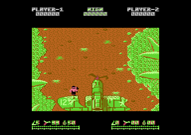
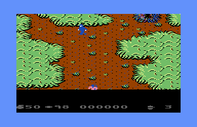

<meta charset="utf-8">
<meta name="viewport" content="width=device-width, initial-scale=1">
<title>Ikari Warriors</title>
<link rel="preconnect" href="https://fonts.googleapis.com">
<link rel="stylesheet" href="https://fonts.googleapis.com/css2?family=Lato:wght@400;700;900&family=IBM+Plex+Mono:wght@400;500&display=swap">
<style>
:root{
  --bg:#23262d; --paper:#e9e7e1; --surface:#ffffff; --surface-2:#f1efea; --line:#d5d3cc; --line-soft:#e0ded8;
  --ink:#2f3136; --ink-soft:#55585f; --ink-mute:#80838a;
  --link:#1f5fa8; --link-hover:#154480; --accent:#1f5fa8;
  --amber:#c25a00; --cyan:#1f5fa8; --coral:#d04a3a; --green:#2a8a4a; --violet:#4a5bd6; --hl:#fff0c2;
  --chip:#2f3136; --chip-ink:#ffffff;
  --c64blue:#40318d; --c64grey:#686868;
  --fd:'Lato',system-ui,sans-serif; --fb:'Lato',system-ui,sans-serif; --fm:'IBM Plex Mono',ui-monospace,Menlo,monospace;
  --col:1080px; --gx:68px; --fs:17px; --lh:1.6; --hw:900; --h1:46px; --h2:26px; --sy:48px; --pp:26px; --r:10px;
  --plate-shadow:0 1px 2px rgba(0,0,0,.05),0 4px 14px rgba(0,0,0,.05);
}
*{box-sizing:border-box}
html{background:var(--bg);min-height:100%}
body{background:var(--paper);color:var(--ink);font-family:var(--fb);font-size:var(--fs);line-height:var(--lh);max-width:var(--col);margin:0 auto;min-height:100vh;padding:0 0 4rem}
h1,h2,h3{font-weight:var(--hw);letter-spacing:-.01em;text-wrap:balance;color:var(--ink);margin:0}
.wrap{padding:0 var(--gx)}
.hero{padding:48px var(--gx) 8px;text-align:left}
.eyebrow{font-family:var(--fm);font-size:12px;letter-spacing:.08em;text-transform:uppercase;color:var(--ink-mute);margin:0 0 10px}
.hero h1{font-size:var(--h1);line-height:1.15;letter-spacing:-.02em;margin:0 0 14px}
.hero .sub{margin:0 0 .6em;color:var(--ink-soft)}
section{padding:var(--sy) 0 24px}
section:last-of-type{border-bottom:none}
.fig{font-family:var(--fm);font-size:12px;letter-spacing:.08em;text-transform:uppercase;color:var(--ink-mute);margin:0 0 10px}
h2.t{font-size:var(--h2);margin-bottom:12px}
.lede{color:var(--ink-soft);margin:0 0 30px}
.plate{background:var(--surface);border:1px solid var(--line);border-radius:var(--r);padding:var(--pp);box-shadow:var(--plate-shadow)}
.cap{font-size:14px;color:var(--ink-mute);margin-top:14px;line-height:1.55}
.cap b{color:var(--ink);font-weight:700}
code{font-family:var(--fm);font-size:.82em;background:var(--chip);color:var(--chip-ink);border-radius:4px;padding:2px 6px;overflow-wrap:break-word;-webkit-box-decoration-break:clone;box-decoration-break:clone}

.plate{margin:0 0 22px}
@media (max-width:760px){:root{--gx:16px;--h1:36px;--pp:14px}.ik-two{grid-template-columns:1fr}}
.ik-two{display:grid;grid-template-columns:1fr 1fr;gap:16px;align-items:start}
.ik-table{border-collapse:collapse;font-size:14px;width:100%}
.ik-table td,.ik-table th{border-bottom:1px solid var(--line-soft);padding:5px 8px;text-align:left;vertical-align:top}
.ik-px{image-rendering:pixelated;display:block;max-width:100%;height:auto}
.ik-sheet{display:flex;flex-wrap:wrap;gap:6px}
.ik-sheet figure{margin:0;background:#222;border-radius:4px;padding:3px;text-align:center}
.ik-sheet figcaption{font:500 10px/1.3 var(--fm);color:#fff}
.ik-sheet canvas{image-rendering:pixelated;display:block}
.ik-row{display:flex;flex-wrap:wrap;gap:8px;align-items:center;margin:10px 0}
.ik-note{font-size:14px;color:var(--ink-mute)}
sup.fn{font-size:.7em;line-height:0}
sup.fn a{text-decoration:none}
sup.fn + sup.fn::before{content:","}
.overview-shot{margin:22px 0}
.overview-shot img{width:100%;max-width:768px;height:auto;aspect-ratio:384/272;image-rendering:pixelated;display:block}
.overview-shot figcaption{font-size:14px;color:var(--ink-mute);margin-top:8px;max-width:768px}

</style>
<!-- tabs -->
<header class="hero">
  <p class="eyebrow">Commodore 64 · 1988 · Elite Systems</p>
  <h1>Ikari Warriors</h1>
  <p class="sub">Two commandos walk out of a crashed plane and fight their way up one long jungle road, on foot or in any tank they find. Elite's conversion of SNK's arcade game scored 89 per cent in <i>Zzap!64</i>.</p>
</header>
<main class="wrap">

<section id="game">
  <p class="fig">01 · The game</p>
  <h2 class="t">Two survivors and a long road north</h2>
  <p>A plane carrying a team of commandos crashes in hostile jungle. Everyone on board dies except two dazed soldiers, who now face a long walk to safety with their machine guns and a supply of grenades.<sup class="fn"><a href="about.html#src-1" title="Zzap!64 35, review">1</a></sup> One player controls one of them, or two players control both at once, side by side on the same screen.</p>
  <figure class="overview-shot"><figcaption>The loading picture, shown while the game loads from disk. The <a href="graphics.html#loading">Graphics</a> page shows how it reaches the screen.</figcaption></figure>
  <p>The road runs north, and the screen <a href="gameplay.html#route">scrolls up</a> as you walk. Soldiers pour out of the trees. A tap of fire shoots, and holding it <a href="gameplay.html#fire">throws a grenade</a>. Both run out, and some of the soldiers you kill drop <a href="gameplay.html#items">coloured tokens</a> that refill them or give you better weapons. Empty <a href="gameplay.html#tanks">tanks</a> marked IN wait along the way: climb in and bullets cannot touch you until the fuel runs dry.</p>
  <p>A bullet, a grenade, a <a href="gameplay.html#mines">mine</a> or a soldier walking into you costs a life, and the game ends when both players have lost all of theirs. Reach the end of the road and you have <a href="gameplay.html#ending">rescued Colonel Cook</a>, for a bonus of 100,000 points.</p>
  <figure class="overview-shot"><figcaption>The start, beside the wrecked plane. The panel below the road counts each player's lives, bullets and grenades, and the score panel sits above it. The <a href="levels.html">Maps</a> page draws the whole road.</figcaption></figure>
</section>

<section id="makers">
  <p class="fig">02 · The people</p>
  <h2 class="t">The people behind the game</h2>
  <p>SNK made <i>Ikari Warriors</i> for the arcades in 1986. The arcade cabinet had joysticks that also turned, so a player could walk one way and shoot another.<sup class="fn"><a href="about.html#src-3" title="Wikipedia, Ikari Warriors">3</a></sup> On the Commodore 64 a joystick only points, so Elite added <a href="controls.html#lock">a lock key</a> that keeps your aim while you walk.</p>
  <p>Elite Systems published this version in Europe in 1988. The game names its makers in its own title pages, in the text at <a href="source.html#21EE"><code>credits_text</code></a>: written by John Twiddy, graphics by Paul Walker, Rory Green, Karen Trueman, and John Harrison, and music by Jason Brooke.<sup class="fn"><a href="about.html#src-4" title="GameBase64, Ikari Warriors">4</a></sup></p>
  <p>Data East sold a different Commodore 64 version in America, written by Quicksilver Software.<sup class="fn"><a href="about.html#src-5" title="MobyGames, Ikari Warriors">5</a></sup> Its code, graphics and screen layout are its own: none of its files' bytes appear in Elite's game.</p>
  <div class="ik-two">
    <figure class="overview-shot" style="margin:0"><figcaption>Elite's version, from 1988.</figcaption></figure>
    <figure class="overview-shot" style="margin:0"><figcaption>Data East's version, from 1987, a different program.</figcaption></figure>
  </div>
</section>

<section id="reception">
  <p class="fig">03 · Reception</p>
  <h2 class="t">89 per cent, and a Commando that came late</h2>
  <p><i>Zzap!64</i> reviewed Elite's version in issue 35, in March 1988, at £9.95 on cassette, and gave it 89 per cent overall: 76 for graphics, 74 for sound, 92 for hookability, and 87 for lastability.<sup class="fn"><a href="about.html#src-1" title="Zzap!64 35, review">1</a></sup></p>
  <p>The reviewers expected little from a <i>Commando</i>-style game so long after that kind of game had faded. "I never liked this in the arcades," one wrote, "but it has been translated to the Commodore well, with the emphasis on playability rather than fancy graphics or sound." Another liked that "you can shoot and grenade your ally": in two-player mode <a href="gameplay.html#friendly">each player's fire hurts the other</a>. The verdict found the single-player game hard and the game at its best with two.</p>
  <p>The music won praise too: "an excellent film-style soundtrack backing the destruction", wrote one reviewer, and another found it "slightly weedy but stirring". The <a href="music.html">Music</a> page plays its three tunes through the game's own driver.</p>
</section>

<section id="explore">
  <p class="fig">04 · Inside</p>
  <h2 class="t">What the reviewers did not see</h2>
  <p>The whole road is one script of 1,891 rows that the game reads a row at a time as you walk, and the <a href="levels.html">Maps</a> page runs it to draw every row. Underneath are things no review mentions: an <a href="discoveries.html#purple">eighth token worth 800 points</a> that no soldier ever carries, three places where <a href="discoveries.html#slips">player two's power-ups are read from player one's</a>, and an ending that says you have "RESCVED" <a href="discoveries.html#rescved">Colonel Cook</a>.</p>
  <p><a href="levels.html">Scroll the whole road</a>, <a href="graphics.html">see every sprite</a>, or <a href="music.html">listen to the tunes and sound effects</a>.</p>
</section>
</main>

<footer style="margin:16px 0 0;padding:22px var(--gx) 0;border-top:1px solid #e0ded8;font-family:'IBM Plex Mono',ui-monospace,Menlo,monospace;font-size:12px;color:#80838a"><a href="https://github.com/gamesexplained/gamesexplained" style="color:#1f5fa8;text-decoration:none">GitHub</a> · <a href="https://discord.gg/3V9GWyRDWV" style="color:#1f5fa8;text-decoration:none">Discord</a><br>© Games Explained contributors. Write-ups, facts and symbol maps are available under <a href="https://creativecommons.org/licenses/by-sa/4.0/" style="color:#1f5fa8;text-decoration:none">CC BY-SA 4.0</a>; code under <a href="https://opensource.org/licenses/MIT" style="color:#1f5fa8;text-decoration:none">MIT</a></footer>
